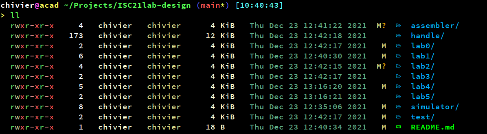

2112-系统重装
系统重装笔记
自从更换了新电脑之后，用了接近一年的windows11，但是在工作的时候发现了诸多问题。首先，从回顾我的工作流程开始：
- 开机
- 打开wsl
- 进入Projects目录，使用vscode编程
除此之外，windows对于我所有的用途为：
- 浏览器看网页
- outlook查看邮件
- Office做ppt
那么问题又来了，一般的展示我不会使用ppt，在使用obsidian之后我就更不用Office系列了，唯一需要Office的功能是Publisher。而且长期使用wsl给我的16G内存带来了巨大负担。此外还有WSL GUI的UI风格不统一、Windows11的宋体任务栏等诸多问题让我最终还是回归了熟悉的Linux系统。
在这一次装机的大部分流程和之前的Rebuild My Home基本一致，但是部分由于系统更新导致了一些可能存在的问题，在这里予以记录。
1. 输入法
现在的Linux下，输入法名称不再是 SogouPinyin， 搜狗官方予以的支持也非常不完善。要不是因为我长期使用小鹤双拼，我已经专用百度输入法了。
这里使用麒麟Ubuntu的源，直接安装里面配置好的sogou pinyin即可：
1 | |
之后直接安装即可。
1 | |
最后在语言选项中，和之前一样的方法修改成fcitx
如果输入经常卡主，可能使ibus和fcitx5的冲突导致，可以用卸载ibus的方式解决。不过方法比较激进，慎重操作。
2. Wechat & TIM
这里使用一种偷懒的方法进行安装。直接使用deepin-wine的源进行安装：
1 | |
之后使用命令安装：
1 | |
即可。
顺带一提，这种方法还可以安装一些其他软件：
| Software | Package Name |
|---|---|
| com.qq.weicin.deepin | |
| com.qq.im.deepin | |
| TIM | com.qq.office.deepin |
| QQ Music | com.qq.music.deepin |
| 爱奇艺 | com.iqiyi.deepin |
此外，Wine Tray 的处理方法是使用Gnome Extensions的Topicon
3. Utools
Utools可以替代部分Albert之前的内容。随软件发展，尽管Utools没有和Linux适配的检索软件，但是大量好用的插件可以弥补不足。主要的常用功能有：
- 软件启动器
- 剪贴板
- 取色器
- 翻译
因为Linux没有和Windows一样好用的检索软件，这里提供一个参考，使用catfish进行GUI检索，locate 和 fzf 配合使用完成命令行检索。
4. Neovim
Neovim中配置Coc.nvim，之后安装插件会比之前vim更简单。这里仅作为参考，不是所有人都能很好的适应vim。
此外我个人vim也并未进行过多配置。核心插件只有tabnine。
5. 触控板
这里在LG gram 16的笔记本上翻车了，触控板驱动可以使用，但是和系统并未配置好。手势和操作不能很好的使用。
这里使用fusuma进行触控板改写。损失了一定的流畅度，但是总体而言，效果还是可用的。特别是定制了4指工作区切换之后，系统变得更加舒适。
6. 字体和colorls
为了更舒适的写程序和文档，一个好的字体是必不可少的一个部分。这里我使用两款字体：
Source Code Pro 和 Sauce Code Pro
其中，后者是在前者的基础上添加了一些符号。主要用途是配合colorls使用。这样命令行的观感更舒适，而且可以更清楚的识别文件的类型。
例如：

7. 工作同步
这里的工作同步使用了两套系统共同进行维护，一套是Microsoft Onedrive，另一套是自己的群辉smb+ftp双接口。
首先说说Onedrive，Onedrive在Windows下确实是非常完美的解决方案。但是在Linux下没有很好的适配版本。有一个貌似可用的软件叫Onedriver，但是性能堪忧。最终选择微软为Linux适配的命令行Onedrive工具进行调试。
教程： https://github.com/abraunegg/onedrive
项目配套了SharePoint的教程。
如果资金尚可，Insync其实也是一个非常好的选择。
8. 需要额外注意的小Tip
这里需要提醒一下使用snap安装软件的局限性。snap安装的软件非常类似wine或者说是docker的模式，将足够多的包和基础设施进行独立封装。这就导致了snap安装的软件是一种类似虚拟机的模式运行的，能够访问的目录和软件权限都有和wine一样的问题。这也就是为什么snap中软件浏览文件的模式非常奇特，和系统默认软件安装的效果截然不同。
所以snap只适合安装：
- 游戏
- 小工具
- 使用方法非常独立的软件
- 网络工具
这里我只有这些软件使用snap安装：
- telegram 聊天软件怎么装都差不多
- ao 给予electron的Microsoft Todo
- lepton Gist的管理工具
- p7zip 7zip的桌面端
- drawio 简单的画图工具
这些工具使用snap安装非常便捷，而且使用相对独立，和其他编程工具、办公软件交互其实不太多。